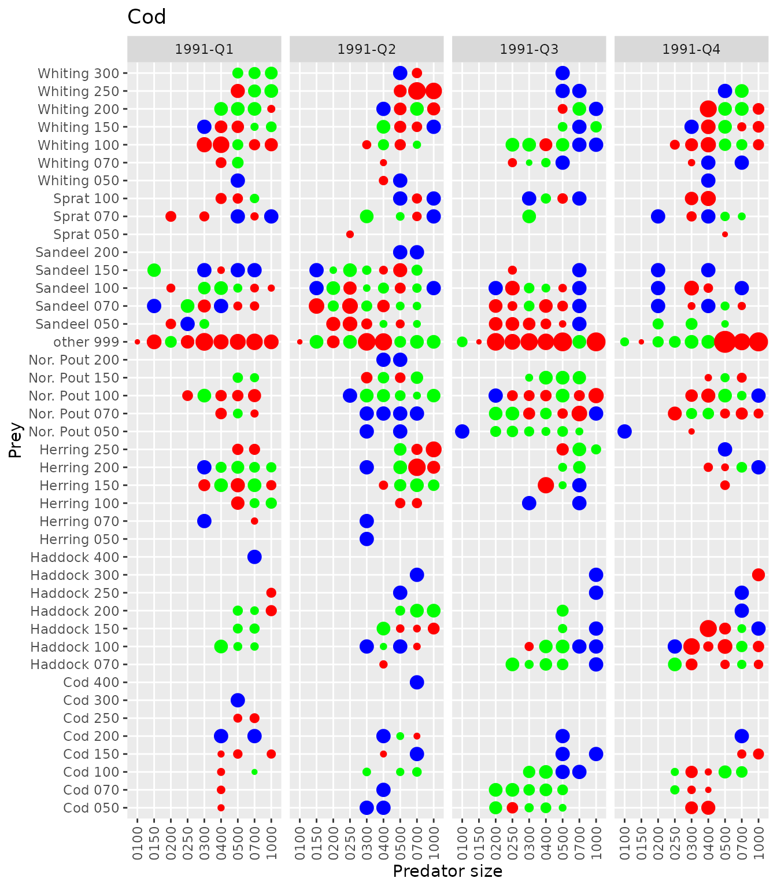
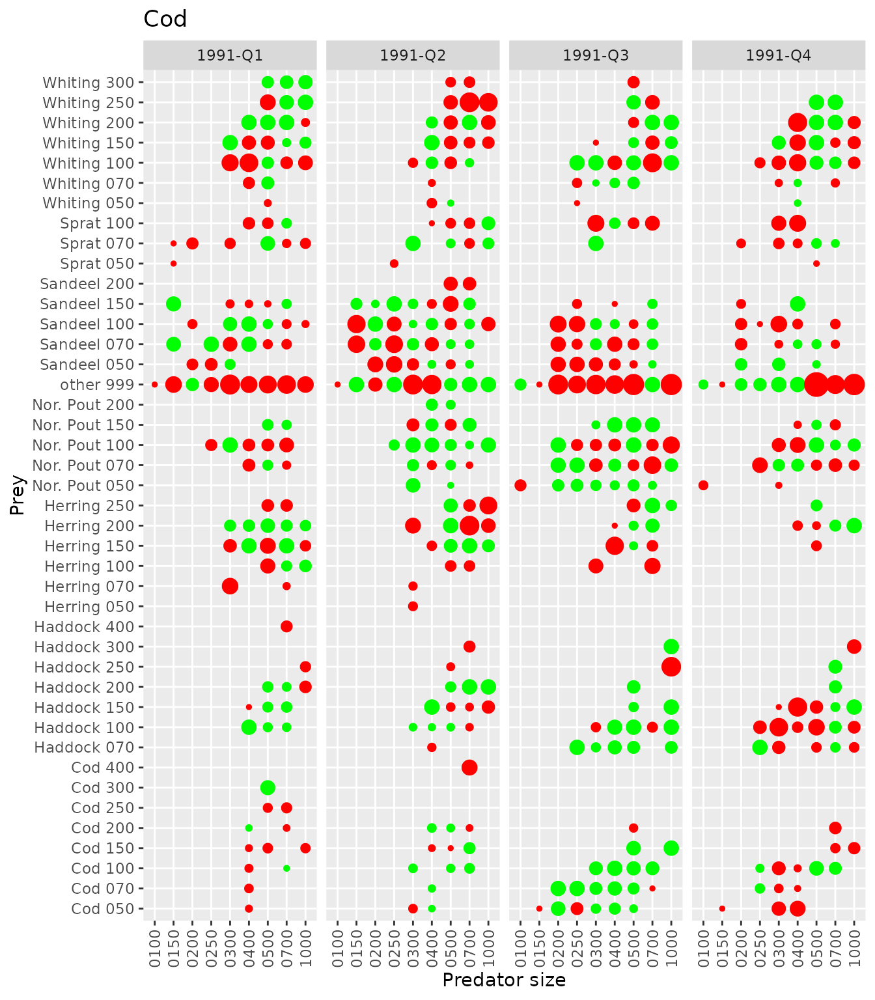
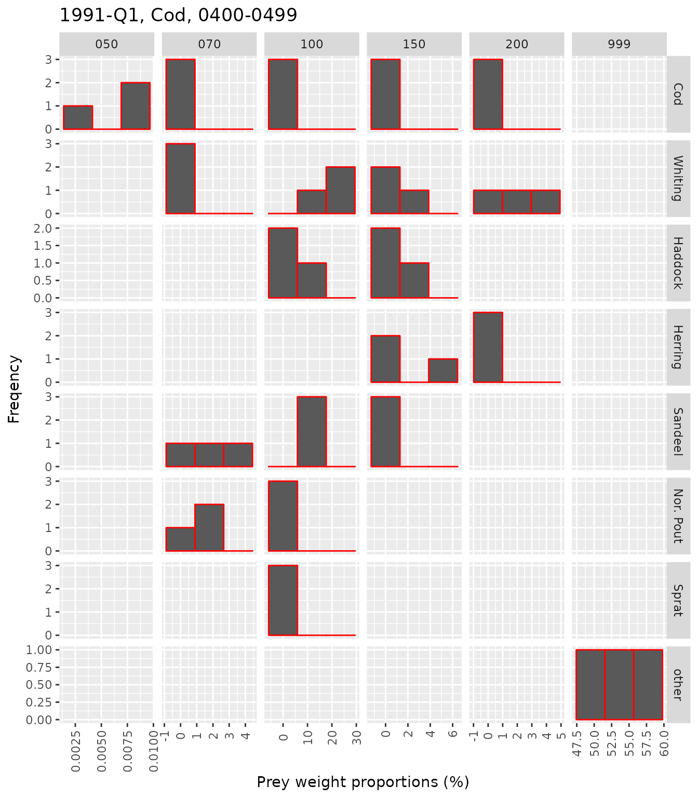
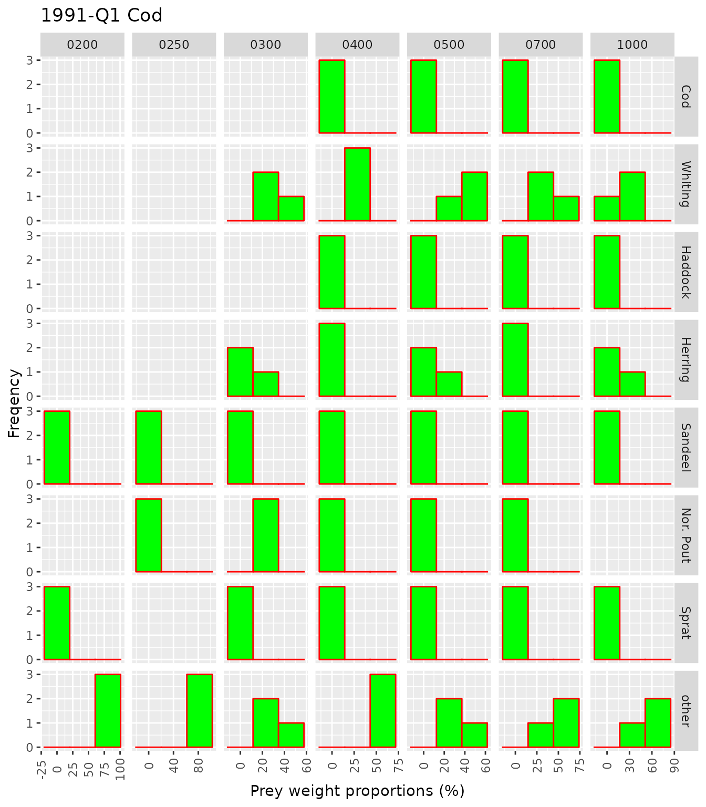
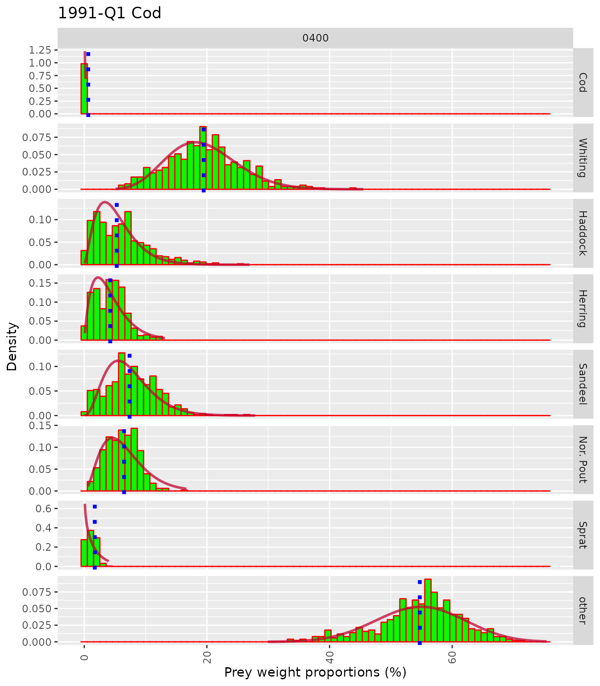

ex06_Bootstrapping.RmdFishStomachs provides functions for estimating the mean and variance of the stomach contents from bootstrapping. First, data from Example 03 are loaded.
library(FishStomachs)
suppressMessages(library(dplyr))
suppressMessages(library(readr))
load(file=file.path(system.file( package = "FishStomachs"),"extdata","ex03half.Rdata"),verbose=TRUE)
#> Loading objects:
#> sOptions for bootstrapping are provided by the bootstrapping control (see below). It is a list, where boots_strata defines the strata for bootstrapping, in this case data are made for each combination of year, quarter and predator. Within such stratum, bootstrap samples are drawn from the pool of boots_id, in this case defined as individual trawl hauls. The variable predator_size is not used for boots_strata to reflect that several predator lengths are often sampled at the same haul. If you want to draw replicates from the pool of samples (haul, predator and predator size) for each predator size, the boots_strata should include the predator size as well (boots_strata = expression(paste(year,quarter,pred_name, pred_size,sep=‘-’)).
############### add variables for bootstrapping
s<-edit_control(s, bootstrapping = list(
boots_id = expression(paste(ship,rectangle,year,quarter,station,haul,sep='_')),
boots_strata = expression(paste(year,quarter,pred_name,sep='-'))
))
#> bootstrapping type; list TRUE
print(get_control(s),'bootstrapping')
#>
#> #### group: bootstrapping
#> bootstrapping: List of 2
#> $ boots_id : expression(paste(ship, rectangle, year, quarter, station, haul, sep = "_"))
#> $ boots_strata: expression(paste(year, quarter, pred_name, sep = "-"))
s<-bootstrap_addVar(s)
names(s[['PRED']])
#> [1] "dataset" "country" "ship" "rectangle"
#> [5] "area" "year" "quarter" "month"
#> [9] "day" "station" "haul" "sample_id"
#> [13] "pred_name" "pred_nodc" "box17" "pred_size_class"
#> [17] "pred_size" "n_tot" "pred_l_mean" "fish_id"
#> [21] "stratum_time" "stratum_area" "stratum_sub_area" "boots_id"
#> [25] "boots_strata"The call to bootstrap_addVar() adds the variables for bootstrapping to data.
The resulting stratification is shown below.
head(bootstrap_show(s,show=c("strata",'sample')[1],vari=c("stomach","sample")[1]))
#> , , pred_name = Gadus morhua
#>
#> pred_size
#> boots_strata 0100-0149 0150-0199 0200-0249 0250-0299 0300-0399
#> 1991-1-Gadus morhua 42 117 123 61 379
#> 1991-2-Gadus morhua 6 216 498 331 582
#> 1991-3-Gadus morhua 248 4 149 392 478
#> 1991-4-Gadus morhua 569 478 149 112 544
#> pred_size
#> boots_strata 0400-0499 0500-0699 0700-0999 1000-1499
#> 1991-1-Gadus morhua 327 610 444 84
#> 1991-2-Gadus morhua 565 675 211 30
#> 1991-3-Gadus morhua 263 264 77 10
#> 1991-4-Gadus morhua 231 257 121 13
head(bootstrap_show(s,show=c("strata",'sample')[1],vari=c("stomach","sample")[2]))
#> , , pred_name = Gadus morhua
#>
#> pred_size
#> boots_strata 0100-0149 0150-0199 0200-0249 0250-0299 0300-0399
#> 1991-1-Gadus morhua 18 51 56 29 128
#> 1991-2-Gadus morhua 6 107 213 115 241
#> 1991-3-Gadus morhua 62 4 68 178 263
#> 1991-4-Gadus morhua 153 108 62 55 223
#> pred_size
#> boots_strata 0400-0499 0500-0699 0700-0999 1000-1499
#> 1991-1-Gadus morhua 122 301 238 62
#> 1991-2-Gadus morhua 182 244 137 24
#> 1991-3-Gadus morhua 122 144 52 9
#> 1991-4-Gadus morhua 97 134 84 12The tables above shows that e.g. cod in quarter 1 has 18 “hauls” with in total 42 stomachs for predator size 0100-0149. The table below shows that each “haul” includes a number of stomachs from various predator sizes.
head(bootstrap_show(s,show=c("strata",'sample')[2],vari=c("stomach","sample")[1]))
#> , , pred_name = Gadus morhua
#>
#> pred_size
#> boots_id 0100-0149 0150-0199 0200-0249 0250-0299 0300-0399
#> CIR_32F2_1991_2_3_3 0 0 1 1 1
#> CIR_32F2_1991_3_5_5 0 0 0 0 11
#> CIR_32F3_1991_2_5_5 0 0 3 4 4
#> CIR_32F3_1991_4_121_121 1 0 0 0 0
#> CIR_33F2_1991_3_7_7 0 0 0 0 4
#> CIR_33F3_1991_3_20_20 0 0 0 1 0
#> pred_size
#> boots_id 0400-0499 0500-0699 0700-0999 1000-1499
#> CIR_32F2_1991_2_3_3 0 3 2 0
#> CIR_32F2_1991_3_5_5 3 0 0 0
#> CIR_32F3_1991_2_5_5 0 0 0 0
#> CIR_32F3_1991_4_121_121 0 1 0 0
#> CIR_33F2_1991_3_7_7 2 3 1 0
#> CIR_33F3_1991_3_20_20 0 0 0 0We are now ready to do the bootstrapping, however to speed up, task common for all replicates are done first. That is the definition of the included prey species and the specification of stratifications for calculation population diet.
# a very complex way of getting a list of prey names!
keep_prey <-(read_csv(file.path(system.file( package = "FishStomachs"),"extdata","species_info.csv"),
col_types = cols()) %>%
filter(prey_sp) %>% select(species) %>% unique())$species
keep_prey #input is just a vector of prey names
#> [1] "Gadus morhua" "Merlangius merlangus"
#> [3] "Melanogrammus aeglefinus" "Clupea harengus"
#> [5] "Ammodytidae" "Trisopterus esmarkii"
#> [7] "Sprattus sprattus"
s<-edit_control(s,sel_preys=keep_prey)
#> sel_preys type; vector TRUE
from_to <-make_from_to_species(inp_file=
file.path(system.file( package = "FishStomachs"),"extdata","from_to_species.csv"))
s<-edit_control(s,
calc_sub_strata=list(
# transform into relative weight before data are compiled
relative_weight=FALSE,
# use number of stomach in the sample as weighting factor
weighting_factor=expression(n_tot),
# set file to NA when weighting_factor is given
weighting_factor_file=NA
),
calc_strata=list(
relative_weight=FALSE,
weighting_factor=expression(sqrt(mean_cpue)),
weighting_factor_file=NA
),
calc_total=list(
relative_weight=FALSE,
# set to NA when input is provided in a file
weighting_factor=NA,
# use data from a specified file (in those case, a file provided by the FishStomachs)
weighting_factor_file=file.path(system.file( package = "FishStomachs"),"extdata","weighting_total.csv")
)
)
#> calc_sub_strata type; list TRUE
#> calc_strata type; list TRUE
#> calc_total type; list TRUEThe processing of observations into population diet is put into a function, do_boots, which is user defined. In this case the code included in do_boots is copied from Example 03.
do_boots<-function(s) {
# cat('*') # to show that something is happening
# to keep information on bootstrap replicate
rep_id<-unlist(s[['PRED']][1,'rep_id'])
# by sample
s<-redist_unidentified_prey_sp(s,dist_time=stratum_time,dist_area=sample_id,
dist_pred_size=pred_size, do_only=c(1,2),from_to_species=from_to,
by_prey_size=FALSE,remains_to_other = FALSE)
# by sub_area (=rectangel)
s<-redist_unidentified_prey_sp(s,dist_time=stratum_time,dist_area=stratum_sub_area,
dist_pred_size=pred_size, do_only=c(1,2),from_to_species=from_to,
by_prey_size=FALSE,remains_to_other = FALSE)
# by area (=roundfish area)
s<-redist_unidentified_prey_sp(s,dist_time=stratum_time,dist_area=stratum_area,
dist_pred_size=pred_size, do_only=c(1,2,3),from_to_species=from_to,
by_prey_size=FALSE,remains_to_other = FALSE)
# all areas
s<-redist_unidentified_prey_sp(s,dist_time=stratum_time,dist_area='All',
dist_pred_size=pred_size, do_only=c(1,2,3),from_to_species=from_to,
by_prey_size=FALSE,remains_to_other = FALSE)
# all areas and half-year (dist_time is changed)
s<-redist_unidentified_prey_sp(s,dist_time=paste(year,ifelse(quarter %in% c(1,2),'S1','S2')),
dist_area='All',dist_pred_size=pred_size, do_only=c(1,2,3),from_to_species=from_to,
by_prey_size=FALSE,remains_to_other = FALSE)
# the same as above, but unallocated remains to "other food".
s<-redist_unidentified_prey_sp(s,dist_time=paste(year,ifelse(quarter %in% c(1,2),'S1','S2')),
dist_area='All',dist_pred_size=pred_size, do_only=c(1,2,3),from_to_species=from_to,
by_prey_size=FALSE,remains_to_other = TRUE)
# by statum_area (=roundfish area)
s<-redist_unidentified_prey_lengths(s,dist_time=stratum_time,dist_area=stratum_area,
dist_pred_size=pred_size,
remains_to_other = FALSE, # do not add records with missing length allocation to "other food"
others_to_other=TRUE # do add other species that selected prey species to "other food"
)
# within all areas
s<-redist_unidentified_prey_lengths(s,dist_time=stratum_time,dist_area='All',
dist_pred_size=pred_size,remains_to_other = FALSE)
# within all areas, and year (ignoring quarter)
s<-redist_unidentified_prey_lengths(s=s,dist_time=substr(stratum_time,1,4),dist_area='All',
dist_pred_size=pred_size,remains_to_other = FALSE)
# as above, but with conversion of unallocated into "other"
s<-redist_unidentified_prey_lengths(s=s,dist_time=substr(stratum_time,1,4),dist_area='All',
dist_pred_size=pred_size,remains_to_other = TRUE)
d<-calc_population_stom(s)
d[['PRED']]$rep_id<-rep_id
return(d)
}The creation of data for bootstrapping is done by the function bootstrap_data(), which create a new STOMobs object including the bootstrap replicate data. The result of the call, bd, is a list with STOMobs object.
n_boot<-1:3 # make 3 bootstrap replicates
bd<-lapply(n_boot,function(x) bootstrap_data(s,seed=x,rep_id=x))
print(bd[[1]],show_attributes=FALSE)
#> Object of class 'STOMobs'
#> ===========================
#> Number of samples: 4231
#> Number stomachs: 9054
#> Predators: Gadus morhua
#> Number of prey names: 12
#> Years: 1991
print(bd[[2]],show_attributes=FALSE)
#> Object of class 'STOMobs'
#> ===========================
#> Number of samples: 3882
#> Number stomachs: 8798
#> Predators: Gadus morhua
#> Number of prey names: 12
#> Years: 1991The calculation of the population diet is done for each STOMobs object as shown below. The result is a list of STOMdiet objects.
#convert observations into population diet
bt<-lapply(bd,do_boots)
bt[[1]] # STOMdiet object
#> Object of class 'STOMdiet'
#> ===========================
#> Number stomachs: 9054
#> Predators: Gadus morhua
#> Number of prey names: 8
#> Prey names:Ammodytidae; Clupea harengus; Gadus morhua; Melanogrammus aeglefinus;
#> Merlangius merlangus; Sprattus sprattus; Trisopterus esmarkii; other;
#> Temporal strata: 1991-Q1; 1991-Q2; 1991-Q3; 1991-Q4;
bt[[2]] # STOMdiet object
#> Object of class 'STOMdiet'
#> ===========================
#> Number stomachs: 8798
#> Predators: Gadus morhua
#> Number of prey names: 8
#> Prey names:Ammodytidae; Clupea harengus; Gadus morhua; Melanogrammus aeglefinus;
#> Merlangius merlangus; Sprattus sprattus; Trisopterus esmarkii; other;
#> Temporal strata: 1991-Q1; 1991-Q2; 1991-Q3; 1991-Q4;The STOMdiet can be changed. In this case predator and prey names are changed into English names and prey weights into relative weights
bt2<-lapply(bt,function(x){
x<-from_to_species_diet(x,pred_from_to=c("species","short"),prey_from_to=c("species","short"),
sp_info_file=file.path(system.file( package = "FishStomachs"),"extdata",'species_info.csv'))
#Relative stomach contents
x[['PREY']]<- x[['PREY']] %>% dplyr::group_by(key) %>%
dplyr::mutate(prey_w=prey_w/sum(prey_w)*100) %>% dplyr::ungroup()
return(x)
})
# change to English names in the source data for bootstrap, for a later merge
source<-from_to_species_diet(s,pred_from_to=c("species","short"),prey_from_to=c("species","short"),
sp_info_file=file.path(system.file( package = "FishStomachs"),"extdata",'species_info.csv'))The estimated diets for each bootstrap replicates are different as shown below, where the two first replicates are compared. The size of the bubbles indicate the difference, d1-d2, between the two diets. Red is negative, green is positive and blue shows that data are missing in one of the two sets.
# comparison of two replicates
plotdif(d1=bt2[[1]],d2=bt2[[2]],show_plot=TRUE,cut_pred_size=c(1,4),cut_prey_size=c(2,4),addTitle=TRUE,
tAngle=90, relative=FALSE,maxDif=3,
byVar=c('year-quarter','year','quarter','none')[4])
#> NULLMissing prey and prey size combination in the bootstrap replicates can be filled in with a selected value, in this case with zero.
bt3<-add_missing_boots(bt2, mis_value=0)
plotdif(d1=bt3[[1]],d2=bt3[[2]],show_plot=TRUE,cut_pred_size=c(1,4),cut_prey_size=c(2,4),addTitle=TRUE,
tAngle=90, relative=FALSE, maxDif=3,
byVar=c('year-quarter','year','quarter','none')[4])
#> NULLPlots of the bootstrapped diet are available. In the case below, a subset of data the replicates are first made, and the distribution of the individual replicates are shown, by prey species and their size.
# sub set for plot
bt4<-lapply(bt3,function(x){
subset(x,pred_name=='Cod' & pred_size=='0400-0499' & stratum_time=='1991-Q1')
})
plotboots.size(b=bt4,show_plot=TRUE,cut_pred_size=c(1,10),cut_prey_size=c(2,4),addTitle=TRUE,tAngle=90)
#> NULLIn another plot, prey sizes are combined, and the plot show the distribution of prey weight by prey species and predator size.
# sub set for plot
bt4<-lapply(bt3,function(x){
subset(x,pred_name=='Cod' & stratum_time=='1991-Q1' & !(pred_size %in% c('0100-0149','0150-0199')))
})
plotboots(b=bt4,show_plot=TRUE,cut_pred_size=c(1,4),addTitle=TRUE,tAngle=90)
#> NULLThe bootstrap mean and variance from replicates are calculated by a call to bootsMean(). See help(bootsMean) for more information.
# load diet data (point estimate) from example 03
load(file=file.path(system.file( package = "FishStomachs"),"extdata","ex03d.Rdata"),verbose=TRUE)
#> Loading objects:
#> d
# change from latin to English names (used later on)
pointEst<-from_to_species_diet(d,pred_from_to=c("species","short"),prey_from_to=c("species","short"),
sp_info_file=file.path(system.file( package = "FishStomachs"),"extdata",'species_info.csv'))
bb<-bootsMean(b=bt4,pointEst,by_prey_size=FALSE)
head(bb)
#> # A tibble: 6 × 18
#> nboots year quarter pred_name pred_…¹ prey n_pre…² phi param mu p_value
#> <int> <int> <int> <fct> <fct> <chr> <int> <lgl> <lgl> <lgl> <lgl>
#> 1 3 1991 1 Cod 0200-0… Sand… 3 NA NA NA NA
#> 2 3 1991 1 Cod 0200-0… Sprat 3 NA NA NA NA
#> 3 3 1991 1 Cod 0200-0… other 3 NA NA NA NA
#> 4 3 1991 1 Cod 0250-0… Sand… 3 NA NA NA NA
#> 5 3 1991 1 Cod 0250-0… Nor.… 3 NA NA NA NA
#> 6 3 1991 1 Cod 0250-0… other 3 NA NA NA NA
#> # … with 7 more variables: mean_w <dbl>, sd_w <dbl>, n_stom <int>,
#> # n_sample <int>, prey_w <dbl>, prey_name <fct>, prey_size <chr>, and
#> # abbreviated variable names ¹pred_size, ²n_prey_sp
plotboots(b=bt4,show_plot=TRUE,cut_pred_size=c(1,4),addTitle=TRUE,tAngle=90)#> NULLWith more replicates, loaded from data set.
load(file=file.path(system.file( package = "FishStomachs"),"extdata","bt4.Rdata"),verbose=TRUE)
#> Loading objects:
#> bt4
bb<-bootsMean(b=bt4,pointEst,by_prey_size=FALSE,do_Diri=TRUE)
select(bb,prey_name, phi,param,mu,mean_w,sd_w,prey_w)
#> # A tibble: 8 × 7
#> prey_name phi param mu mean_w sd_w prey_w
#> <fct> <dbl> <dbl> <dbl> <dbl> <dbl> <dbl>
#> 1 Cod 47.7 0.312 0.00654 0.000426 0.000357 0.000441
#> 2 Whiting 47.7 9.28 0.195 0.197 0.0615 0.194
#> 3 Haddock 47.7 2.53 0.0530 0.0610 0.0437 0.0562
#> 4 Herring 47.7 2.02 0.0424 0.0423 0.0249 0.0410
#> 5 Sandeel 47.7 3.53 0.0739 0.0789 0.0420 0.0722
#> 6 Nor. Pout 47.7 3.10 0.0649 0.0617 0.0254 0.0608
#> 7 Sprat 47.7 0.820 0.0172 0.0120 0.00752 0.0130
#> 8 other 47.7 26.1 0.547 0.547 0.0677 0.562
plotboots(b=bt4,cut_pred_size=c(1,4),addTitle=TRUE,tAngle=90,statistics=bb)
#> NULL